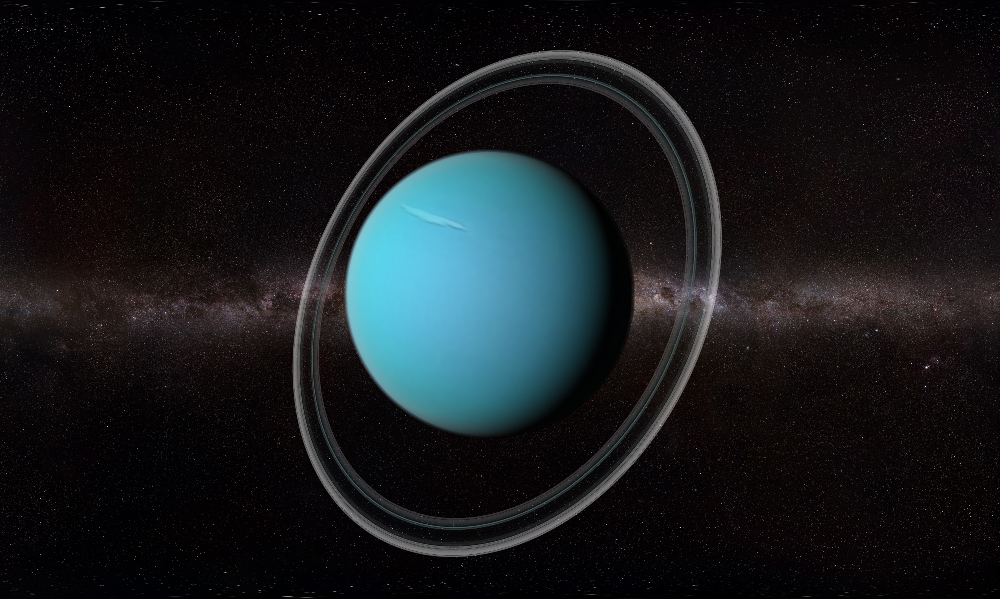

Earth

Земля́ — третья по удалённости от Солнца планета Солнечной системы. Самая плотная, пятая по диаметру и массе среди всех планет
Солнечной системы и крупнейшая среди планет земной группы, в которую входят также Меркурий, Венера и Марс.
Единственное известное человеку в настоящее время тело во Вселенной, населённое живыми организмами..
Jupiter

Юпитер — самая большая планета Солнечной системы, газовый гигант. Его экваториальный радиус равен 71,4
тыс. км, что в 11,2 раза превышает радиус Земли . Юпитер — единственная планета, у которой центр масс с Солнцем находится вне
Солнца и отстоит от него примерно на 7 % солнечного радиуса.
Saturn
Сату́рн — шестая планета по удалённости от Солнца и вторая по размерам планета в Солнечной системе после Юпитера. Сатурн
классифицируется как газовая планета-гигант. Сатурн назван в честь римского бога земледелия. В основном Сатурн состоит из водорода,
с примесями гелия и следами воды, метана, аммиака и тяжёлых элементов. Внутренняя область представляет собой относительно небольшое ядро из железа,
никеля и льда, покрытое тонким слоем металлического водорода и газообразным внешним слоем.
Mars

Марс — четвёртая по удалённости от Солнца и седьмая по размеру планета Солнечной системы; масса планеты составляет 10,7 % массы Земли.Перейти к
разделу «Основные сведения» Названа в честь Марса — древнеримского бога войны, соответствующего древнегреческому Аресу.Перейти к разделу «В античной мифологии»
Также Марс называют красной планетой из-за красноватого оттенка поверхности, придаваемого ей минералом маггемитом — γ-оксидом железа.
Uranus

Ура́н — планета Солнечной системы, седьмая по удалённости от Солнца, третья по диаметру и четвёртая по массе. Была открыта в 1781 году английским астрономом
Уильямом Гершелем и названа в честь греческого бога неба Урана.Уран стал первой планетой, обнаруженной в Новое время и при помощи телескопа. Его
открыл Уильям Гершель 13 марта 1781 года, тем самым впервые со времён античности расширив границы Солнечной системы в глазах человека
Neptune
Непту́н — восьмая и самая дальняя от Солнца планета Солнечной системы. Его масса превышает массу Земли в 17,2 раза и является третьей среди
планет Солнечной системы, а по экваториальному диаметру Нептун занимает четвёртое место, превосходя Землю в 3,9 раза. Планета названа в честь
Нептуна — римского бога морей.Обнаруженный 23 сентября 1846 года, Нептун стал первой планетой, открытой благодаря математическим расчётам.
Venus

Вене́ра — вторая по удалённости от Солнца и шестая по размеру планета Солнечной системы, наряду с Меркурием, Землёй и Марсом принадлежащая к семейству
планет земной группы. Названа в честь древнеримской богини любви Венерa. По ряду характеристик — например, по массе и размерам — Венера считается «сестрой»
Земли. Венерианский год составляет 224,7 земных суток.
Sun

Солнце — одна из звёзд нашей Галактики (Млечный Путь) и единственная звезда Солнечной системы. Вокруг Солнца обращаются другие объекты этой системы:
планеты и их спутники, карликовые планеты и их спутники, астероиды, метеороиды, кометы и космическая пыль.Эффективная температура поверхности
Солнца — 5780 кельвин. Поэтому Солнце светит почти белым светом, но прямой свет Солнца у поверхности нашей планеты приобретает некоторый жёлтый оттенок.
| Planet |
Distance(Km) |
Distance(Mil) |
| Neptune |
4.5 Billion Kilometers |
2.8 Billion Miles |
| Uran |
2.9 Billion Kilometers |
1.8 Billion Miles |
| Saturn |
1.4 Billion Kilometers |
886 Million Miles |
| Jupiter |
778 Million Kilometers |
484 Million Miles |
| Mars |
228 Million Kilometres |
142 Million Miles |
| Earth |
150 Million Kilometers |
93 Million Miles |
| Venus |
108 Millions Kilometers |
67 Millions Miles |